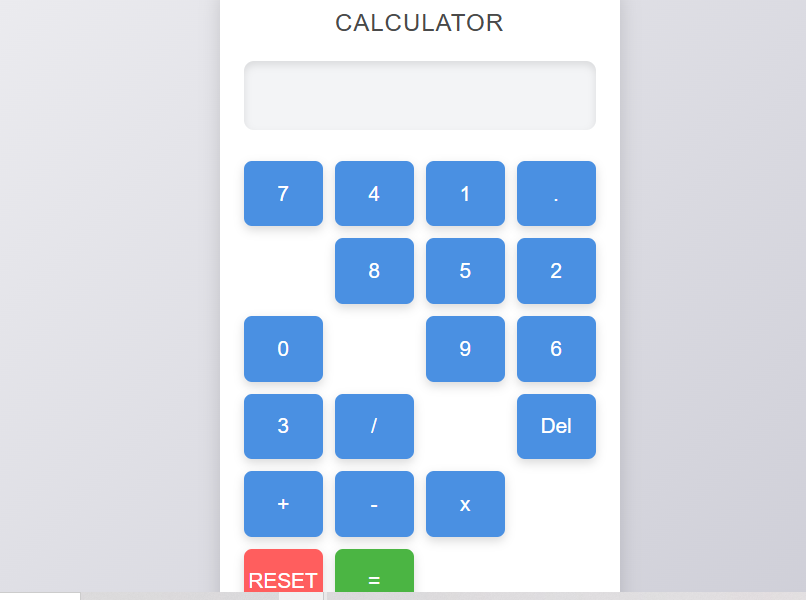

Project 1 - Random Color Generator

A fun and interactive tool that generates a new background color with each click of a button. Built with HTML, CSS, and JavaScript, this project highlights my ability to incorporate dynamic behavior into simple, user-friendly interfaces. Check it out to see how a few lines of JavaScript can bring vibrant color to the page!
Link to demoProject 2 - Interactive Countdown Timer
A sleek and visually appealing countdown timer designed to help users track important events by counting down to specific hours, minutes, or seconds. Built with HTML, CSS, and JavaScript, this timer seamlessly combines functionality and design, providing an engaging way to monitor deadlines or special occasions. Its polished interface and real-time countdown make it a user-friendly tool for anyone needing precise reminders for key events. This project has allowed me to enhance my JavaScript skills, focusing on timing functions and user interface styling, ultimately improving both interactivity and aesthetics.
Link to demoProject 3 - Interactive To-Do List Application
An interactive to-do list application that allows users to manage their tasks efficiently, including adding, deleting, and marking tasks as complete. The app supports task prioritization using color-coding, helping users stay organized and focused on what matters most. Built with HTML, CSS, and JavaScript, this app features a clean, intuitive UI and smooth functionality, providing a seamless user experience. This project deepened my understanding of JavaScript logic, dynamic UI updates, and priority-based task organization, resulting in a practical tool that's as visually appealing as it is functional.
Link to demoProject 4 - Netflix Landing Page Clone
A responsive clone of Netflix's landing page built entirely with HTML and CSS. This project showcases my ability to replicate real-world UI designs, focusing on layout structure, typography, and styling to create a visually appealing, pixel-perfect user interface. Building this clone helped me refine my CSS skills and deepen my understanding of responsive design.
Unfortunately, no screenshot or live demo is available for this project.
Acknowledgement of Copyright
Due to copyright considerations, a screenshot of the original Netflix landing page has not been included. This demonstrates my commitment to respecting intellectual property while showcasing my ability to create similar user interfaces.
Project 5-Personal Portfolio Website:
This website serves as a personal project designed to showcase my front-end development skills. It highlights my expertise in HTML, CSS, and JavaScript while providing a platform for potential clients to explore my work. I am committed to continuously improving this portfolio, incorporating new projects and enhancements that reflect my evolving abilities and design sensibilities.
Project 6- A simple but professional looking calculator
A responsive, user-friendly calculator built using HTML, CSS, and JavaScript, designed for quick and accurate basic arithmetic operations. This application features a clean, intuitive interface, supporting standard functions like addition, subtraction, multiplication, division, and clearing input. Through a grid-based layout and smooth event handling, the calculator delivers a seamless user experience across devices, ensuring functionality with a focus on simplicity and precision. CLICK HERE TO TRY
Conclusion
Through these projects, I have honed my skills in front-end development, mastering the essential tools and technologies that power modern web applications. Each project not only demonstrates my technical abilities but also reflects my commitment to creating user-friendly, visually appealing experiences. I am eager to continue learning and exploring new challenges in web development. Thank you for taking the time to explore my work, and I welcome any feedback or inquiries regarding my projects!
This website will be updated futher with more projects and also improved upon